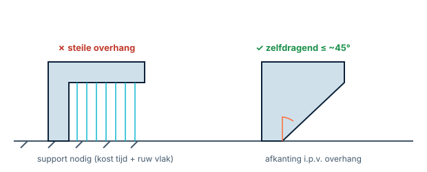
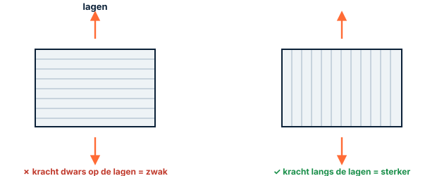
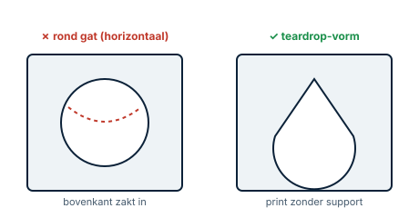

Ontwerpen voor 3D-print (DfAM)Concevoir pour l'impression 3DDesigning for 3D printing (DfAM)
Een model kan op het scherm perfect zijn en tóch onbruikbaar uit de printer komen. In dit hoofdstuk bundelen we de printprincipes die je door de hele cursus al tegenkwam, zodat je printbaar leert ontwerpen — niet pas in de slicer, maar al in FreeCAD.Un modèle parfait à l'écran peut être inimprimable. Ici, on rassemble les principes pour concevoir imprimable dès FreeCAD.A model can look perfect on screen yet fail in the printer. This chapter gathers the print principles so you design for printability — already in FreeCAD, not only in the slicer.
- overhangs herkennen en zelfdragend ontwerpenrepérer les surplombs et concevoir auto-portantspot overhangs and design self-supporting
- de oriëntatie kiezen met het oog op sterktechoisir l'orientation pour la soliditéchoose orientation for strength
- gaten printbaar maken (teardrop, ondermaat)rendre les trous imprimables (teardrop)make holes printable (teardrop, undersize)
- een "klaar om te printen?"-check doenfaire une vérification « prêt à imprimer ? »run a "ready to print?" check
- Zijn mijn wanden en details dik/groot genoeg voor de nozzle?Parois/détails assez épais pour la buse ?Are walls/details thick enough for the nozzle?
- Zitten er steile overhangs in die support vragen — en kan ik ze wegontwerpen?Des surplombs à éviter ?Any steep overhangs needing support — can I design them away?
- Wat is de beste oriëntatie voor sterkte en oppervlak?Meilleure orientation ?Best orientation for strength and surface?
- Moet een horizontaal gat een teardrop-vorm krijgen?Un trou horizontal en teardrop ?Does a horizontal hole need a teardrop?
- Heb ik passingen speling gegeven en de onderranden afgekant (olifantsvoet)?Du jeu + chanfreins en bas ?Did I give fits clearance and chamfer the bottom edges?
01Wanddikte & minimale featuregrootteÉpaisseur & taille minimaleWall thickness & minimum feature size
Een printer legt lijntjes met de breedte van de nozzle (vaak 0,4 mm). Een wand die maar één lijntje dik is, is fragiel; reken op meerdere lijnen (perimeters). Te dunne wandjes of te kleine details komen er slecht of niet uit. Richtwaarde, geen wet: verifieer met een testprint op de clubprinter.La buse (souvent 0,4 mm) trace des lignes ; une paroi d'une seule ligne est fragile. Prévoyez plusieurs périmètres. Valeur indicative — testez.A nozzle (often 0.4 mm) lays down lines; a one-line wall is fragile. Plan for several perimeters. Guide value — verify with a test print.
02Overhangs & supportSurplombs & supportsOverhangs & support
De printer bouwt laag op laag van onder naar boven. Hangt materiaal te ver in de lucht (boven een hellingshoek van grofweg 45° als vuistregel), dan zakt het door en heb je support nodig — extra materiaal dat je nadien wegbreekt, met een ruwer vlak als gevolg. Ontwerp daarom liefst zelfdragend: vervang een scherpe overhang door een afkanting.Au-delà d'environ 45° (règle empirique), la matière retombe → support (à retirer, surface plus rugueuse). Préférez l'auto-portant : un chanfrein plutôt qu'un surplomb.Beyond roughly 45° (rule of thumb), material droops and needs support (broken off later, rougher surface). Prefer self-supporting: a chamfer instead of a sharp overhang.

Een verwante grens is brugvorming: een horizontale overspanning tussen twee steunpunten lukt over een beperkte afstand, maar gaat doorzakken als ze te lang wordt.Le pontage : une travée horizontale entre deux appuis ne tient que sur une distance limitée.A related limit is bridging: a horizontal span between two supports works over a limited distance before it sags.
03Oriëntatie & anisotropieOrientation & anisotropieOrientation & anisotropy
Een geprint deel is niet in alle richtingen even sterk. De hechting tussen de lagen is het zwakke punt: trek je dwars op de lagen, dan splijt het makkelijker dan wanneer de kracht langs de lagen loopt. De oriëntatie op de bouwplaat bepaalt dus sterkte, oppervlak, supportbehoefte en maatnauwkeurigheid tegelijk. Denk dit mee in je ontwerp, niet pas in de slicer.Une pièce imprimée n'est pas isotrope : la liaison entre couches est le point faible. L'orientation décide solidité, surface, support et précision.A printed part is not equally strong in all directions: the bond between layers is the weak point. Orientation sets strength, surface, support and accuracy together.

04Gaten: ondermaat & teardropTrous : sous-cote & teardropHoles: undersize & teardrop
Ronde gaten komen er vaak iets te klein uit — hou daar rekening mee bij schroef- en asgaten (eventueel iets ruimer tekenen, en testen). Horizontale ronde gaten (met de as evenwijdig aan de bouwplaat) zakken bovenaan in, omdat de bovenkant een overhang is. De klassieke oplossing is de teardrop-vorm: een gat met een puntje bovenaan, dat zichzelf draagt.Les trous ronds sortent souvent un peu petits. Les trous horizontaux s'affaissent en haut → forme teardrop (en goutte).Round holes often print slightly undersized. Horizontal round holes sag at the top → the teardrop shape, which supports itself.

05Eerste laag, olifantsvoet & kromtrekken1ʳᵉ couche, pied d'éléphant & gauchissementFirst layer, elephant's foot & warping
De onderste laag wordt licht platgedrukt en spreidt uit: de olifantsvoet. Daardoor wordt de onderrand een tikje breder — wat passingen kan dwarsbomen. Een kleine afkanting (chamfer) aan de onderranden lost dit elegant op. Grote, vlakke delen kunnen bovendien kromtrekken tijdens het afkoelen; hoe sterk hangt af van het materiaal (PLA trekt minder dan ABS).La 1ʳᵉ couche s'étale (pied d'éléphant) : un petit chanfrein en bas corrige. Les grandes faces planes peuvent gauchir (selon le matériau).The bottom layer spreads (elephant's foot): a small chamfer on bottom edges fixes it. Large flat parts may warp (material-dependent: PLA less than ABS).
De 45°-overhang, de wanddikte, de speling: het zijn vuistregels, geen vaste waarheden. Ze hangen af van je printer, materiaal, nozzle en slicer. Maak een kleine kalibratie-/testprint en stem de waarden af op de printer, het materiaal en de slicer van de club. Dat is je ankerpunt voor alle printgetallen.45°, épaisseur, jeu : des règles empiriques dépendant de l'imprimante/matériau/slicer. Testez sur le matériel du club.The 45° overhang, wall thickness, clearance: rules of thumb, not fixed truths. They depend on your printer, material, nozzle and slicer. Make a small test/calibration print and tune to the club's setup.
- Wanden en details dik genoeg (meerdere perimeters)?Parois assez épaisses ?Walls thick enough?
- Steile overhangs vermeden of afgekant?Surplombs évités/chanfreinés ?Steep overhangs avoided or chamfered?
- Beste oriëntatie voor sterkte gekozen?Bonne orientation ?Best orientation chosen?
- Horizontale gaten als teardrop?Trous horizontaux en teardrop ?Horizontal holes as teardrops?
- Passingen met speling, onderranden afgekant?Jeu + chanfreins bas ?Fits with clearance, bottoms chamfered?
- Mesh/STL gecontroleerd (komt in H23)?Maillage vérifié (H23) ?Mesh/STL checked (see H23)?
Voor je ARDF-behuizing: druk het deksel met de buitenkant naar onder voor een net bovenvlak; geef connectoruitsparingen aan de zijkant desnoods een teardrop-bovenrand; en oriënteer montagebeugels zo dat de schroefkracht langs de lagen loopt. Eén testprint van een hoekje bespaart je een hele mislukte print.Boîtier ARDF : couvercle face extérieure en bas ; ouvertures de connecteurs éventuellement en teardrop ; supports orientés pour que l'effort suive les couches.For your ARDF enclosure: print the lid outside-down for a clean top; give side connector cut-outs a teardrop top if needed; orient brackets so screw load runs along the layers. One corner test saves a failed print.
Neem je bak en deksel erbij en loop de checklist hierboven na. Markeer minstens één overhang die je zelfdragend kunt maken met een afkanting, kies de oriëntatie waarin je elk deel zou printen, en bepaal of een gat een teardrop nodig heeft. Print tot slot een klein pas-/testhoekje en noteer de waarden die voor de clubprinter werken.Passez votre boîte/couvercle à la checklist ; repérez un surplomb à chanfreiner, choisissez l'orientation, testez un coin.Run your box and lid through the checklist: mark an overhang to chamfer, pick the orientation for each part, decide if a hole needs a teardrop, and print a small test corner.
06Veelgemaakte foutenErreurs fréquentesCommon mistakes
- Te dunne wanden. Eén-lijns wandjes breken. Reken op meerdere perimeters.Parois trop fines. Plusieurs périmètres.Walls too thin. Plan for several perimeters.
- Steile overhangs zonder plan. Of support, of een afkanting — kies bewust.Surplombs sans plan. Support ou chanfrein.Steep overhangs with no plan. Either support or a chamfer.
- Horizontale ronde gaten zonder teardrop → ovaal en te klein.Trous horizontaux ronds sans teardrop.Horizontal round holes without a teardrop → oval and undersized.
- Eén getal als waarheid nemen. Speling/overhang/wanddikte: altijd testen op de clubprinter.Un chiffre = vérité. Toujours tester.Treating one number as truth. Always test on the club printer.
07Samenvatting
Printbaarheid is een ontwerpkeuze, geen slicer-nazorg. Zorg voor voldoende wanddikte, vermijd steile overhangs (afkanting i.p.v. overhang), kies de oriëntatie met het oog op sterkte (lagen zijn het zwakst), geef horizontale gaten een teardrop, en kant onderranden af tegen de olifantsvoet. Concrete getallen zijn richtwaarden die je met een testprint op de clubprinter verifieert.L'imprimabilité se conçoit : épaisseur, anti-surplomb, orientation, teardrop, chanfreins. Les chiffres sont indicatifs — testez.Printability is a design choice, not slicer aftercare. Ensure wall thickness, avoid steep overhangs, pick orientation for strength, teardrop horizontal holes, chamfer bottoms. Numbers are guide values to verify by test print.
- Afkanting i.p.v. overhang; lagen zijn het zwakste vlak.Chanfrein > surplomb ; couches = plan faible.Chamfer over overhang; layers are the weakest plane.
- Horizontale gaten → teardrop; onderranden → chamfer.Trous horizontaux → teardrop ; bas → chanfrein.Horizontal holes → teardrop; bottoms → chamfer.
- Alle printgetallen = richtwaarde → testprint op de clubprinter.Chiffres = indicatifs → testez.All print numbers = guide values → test on the club printer.